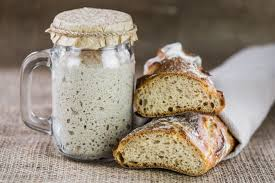

Back to: All Recipes
Easy Sourdough Starter

Description
This sourdough stater recipe combines yeast, water,
and flour for a truly easy to make sourdough starter!
Ingredients
- 2 cups all-purpose flour
- 1 package of active dry yeast
- 2 cups warm water
Steps
- Step 1: Gather all ingredients.
- Step 2: Place flour into a large, non-metallic bowl.
Sprinkle yeast over top, pour in warm water, and mix to combine.
- Step 3: Place the bowl in a cookie sheet; cover loosely
and set in a warm place to ferment for 4 to 8 days. Depending on
temperature and humidity, times may vary. The starter is
ready when bubbly and pleasantly sour smelling. If its colored
at all, throw it out and start over.